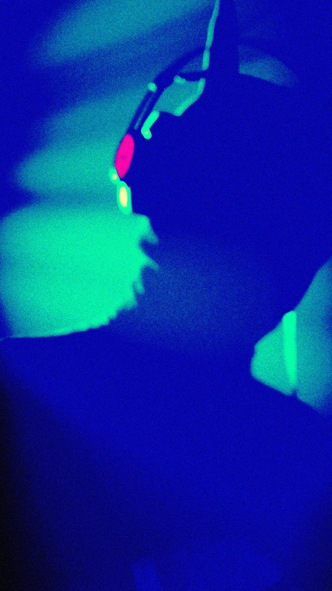

CARACAS, VENEZUELA – El pasado sábado 18 de abril, los espacios de La Quinta Bar dejaron de ser un simple local nocturno para convertirse en el epicentro de una verdadera catarsis musical. Con las entradas de preventa totalmente agotadas, la celebración de Birongo Live 2.0 demostró que en la capital existe una comunidad vibrante, unida y sedienta de experiencias auténticas en torno a la "Música Rápida".

Desde las 11:00 PM, la atmósfera se transformó en un viaje sonoro implacable. El público caraqueño se entregó a una noche donde la diversidad y la energía fueron las protagonistas. El talento nacional brilló con un LineUp de primer nivel que conectó de forma visceral con la pista de baile.
La pauta quedó marcada desde el inicio con los potentes quiebres de Extintor Bass (UK Bass) y el ritmo envolvente de Haddes (Bass House). La intensidad fue subiendo gradualmente con la contundencia de Kurgans (Techno) y el golpe industrial de Moret (Schranz), hasta alcanzar el clímax total con la propuesta disruptiva de Okubo (Hard Raptor). Cada artista sobre la tarima fue una prueba irrefutable de la solidez y la evolución de la producción electrónica en Venezuela.

Gracias al respaldo de aliados clave como Jägermeister, quienes apuestan firmemente por el desarrollo de la cultura alternativa, Birongo Live 2.0 se consolida no solo como una fiesta, sino como una de las experiencias nocturnas más disruptivas y necesarias de Caracas en este 2026.
La invitación queda abierta a toda la comunidad a mantenerse atentos a las redes sociales oficiales, porque el ritmo de Birongo apenas comienza a acelerarse y ya se preparan para futuras ediciones.